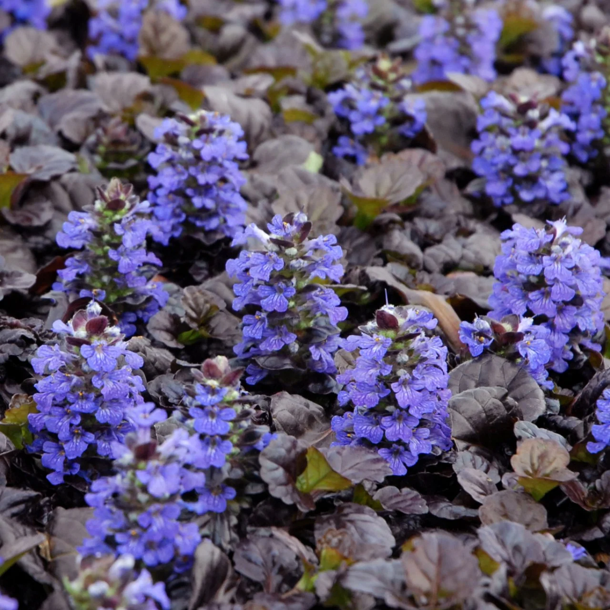

Bungleweed

Description:
The leaves have a spatulate shape with an opposite stem arrangment. They are a shiny medium green with burgundy highlights. The stem is square and hairy. The flowers are purple with 5-7 petals. The fruit come in clusters of 4 nutlets (small nut shaped seeds)
How to get rid of it?
Bungleweed can be pulled out by hand. Watering the plant the day before can loosen the roots for eaisier pulling. Ensure to remove all of the root and root fragments can re-sprout.
What to replace it with?
Bungleweed can be replaced with Bunchberry which is a ground-cover with white flowers native to ontario.